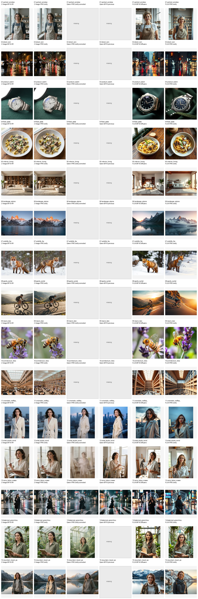
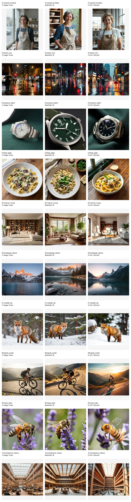
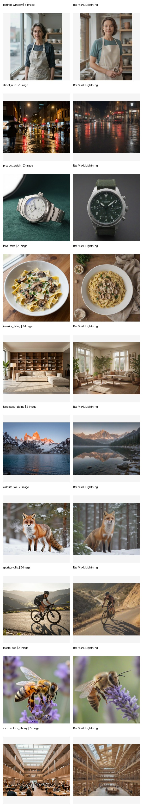
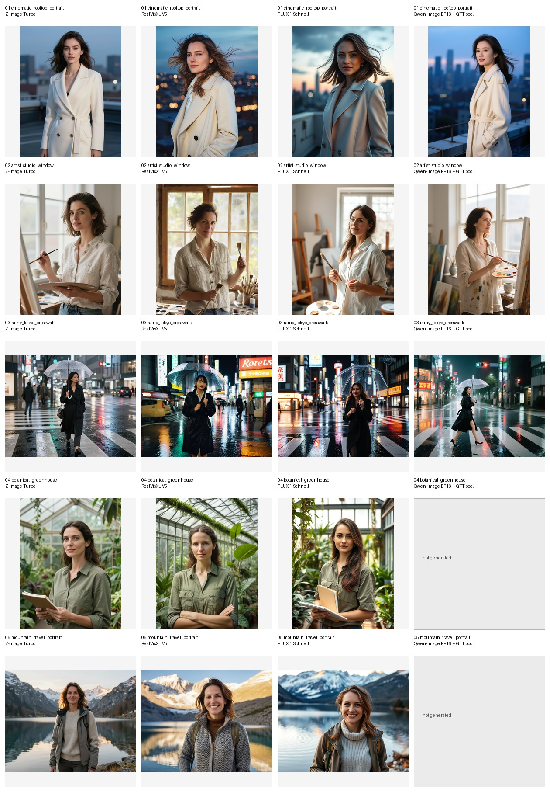
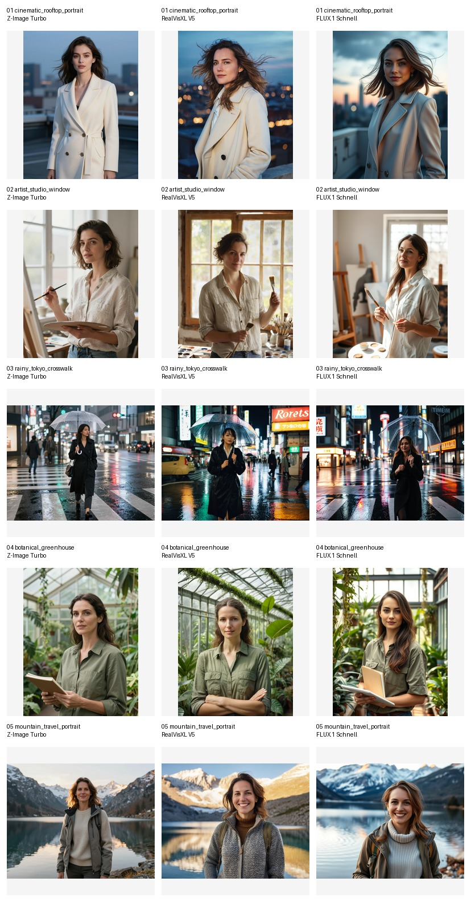

Overview
The page favors artifacts with the highest information density: full current comparison grids, old contact sheets, prompt and summary JSON, and retry evidence where full HTML was not available.
Advanced matrix
Qwen Edit completed the semantic edit cases but took roughly 354-362s. Z-Image covered the T2I rows quickly and had one reference-mode edit failure.
Turbo matrix
Z-Image 4-6 step runs were the fastest cluster. Qwen Lightning 4-step narrowed runtime substantially versus Qwen 20-step baseline.
Comfy FP8 sweep
The broad 15-prompt sheet preserves the best recovered side-by-side view across Z-Image, Qwen, and FLUX FP8/BF16 paths.
BF16 retry
The Qwen BF16 retry artifacts show full-GPU OOM/failure paths and a slower successful GTT/VA pool output.
Recovered Run Index
Original HTML and JSON files are mirrored under photogen-archive/. Older original HTML pages are preserved as artifacts, while this consolidated page uses local, working asset paths.
| Run | Set | Signal | Count | Data |
|---|---|---|---|---|
20260503-z-vs-qwen-advanced-matrix | Advanced feature and turbo matrix | 5 advanced tasks plus 3 turbo tasks; full local PNG grid is mirrored. | 9/10 advanced, 15/15 turbo | metadata |
20260503-comfy-fp8-all-prompts | Comfy FP8 / BF16 all-prompt sweep | 15 prompt contact sheet comparing Z-Image, Qwen, and FLUX columns; corrected Qwen note preserved. | 6 model summary rows | metadata |
20260502-180258-zimage-vs-realvisxl | Z-Image vs RealVisXL baseline | 10 broad photo prompts with Z-Image, RealVisXL, FLUX, and failed Qwen candidate evidence. | 10 prompts | metadata |
20260503-003803-women-model-comparison | Women-focused model comparison | 5 portrait prompts with Z-Image, RealVisXL, FLUX, and partial Qwen BF16 + GTT pool. | 5 prompts | metadata |
20260503-qwen-bf16-retry | Qwen BF16 retry evidence | No original comparison HTML; summaries show OOM/failure paths and one successful GTT/VA pool image. | 2 output PNGs | metadata |
Advanced Feature Matrix
Full detailed grid from 20260503-z-vs-qwen-advanced-matrix, including prompts, timings, success/failure state, and mirrored PNGs.
Photoreal editorial portrait
Z-Image should shine on natural beauty/photo realism; Qwen should show whether corrected workflow can match it.
zimage
success 51.3s
Prompt
Photorealistic cinematic portrait of a beautiful adult woman in her late 20s standing on a city rooftop at blue hour, confident calm expression, elegant tailored cream coat, soft wind moving her hair naturally, skyline bokeh behind her, 85mm lens, shallow depth of field, realistic skin texture, refined editorial fashion photography, tasteful and non-sexual, no text, no watermark.
qwen
success 55.3s
Prompt
Photorealistic cinematic portrait of a beautiful adult woman in her late 20s standing on a city rooftop at blue hour, confident calm expression, elegant tailored cream coat, soft wind moving her hair naturally, skyline bokeh behind her, 85mm lens, shallow depth of field, realistic skin texture, refined editorial fashion photography, tasteful and non-sexual, no text, no watermark.
Readable text in scene
Qwen should shine if text rendering works; Z-Image may produce nicer scene quality but weaker exact text.
zimage
success 46.1s
Prompt
Photorealistic street-level cafe storefront at night after rain, warm interior light, wet pavement reflections, a clean black sign above the door with the exact readable white text "MOON CAFE", realistic typography, no other text, no watermark.
qwen
success 50.4s
Prompt
Photorealistic street-level cafe storefront at night after rain, warm interior light, wet pavement reflections, a clean black sign above the door with the exact readable white text "MOON CAFE", realistic typography, no other text, no watermark.
Product detail and label text
Qwen should shine on label text; Z-Image should show product realism.
zimage
success 48.1s
Prompt
High-end product photograph of an amber glass perfume bottle on black marble, gold cap, realistic reflections, shallow depth of field, luxury studio lighting, the front label has exact readable text "AURELIA No. 7" in elegant serif typography, no other text, no watermark.
qwen
success 50.6s
Prompt
High-end product photograph of an amber glass perfume bottle on black marble, gold cap, realistic reflections, shallow depth of field, luxury studio lighting, the front label has exact readable text "AURELIA No. 7" in elegant serif typography, no other text, no watermark.
Semantic edit: change clothing color
Qwen-Edit should preserve the source while applying a specific semantic change. Z-Image reference mode is included as a comparison, not expected to be as faithful.
zimage_reference
failed n/aRuntimeError('no output image')
Prompt
Change only the coat to deep ruby red velvet. Preserve the woman’s face, identity, pose, hair, camera angle, rooftop background, lighting, depth of field, and overall photorealistic style.
qwen_edit
success 354s
Prompt
Change only the coat to deep ruby red velvet. Preserve the woman’s face, identity, pose, hair, camera angle, rooftop background, lighting, depth of field, and overall photorealistic style.
Reference/material transfer
Qwen-Edit should do targeted product/material editing; Z-Image reference mode may create a new similar image rather than a precise edit.
zimage_reference
success 84.2s
Prompt
Keep the perfume bottle shape, camera angle, composition, and black marble setting. Change the bottle glass from amber to translucent emerald green and make the label cream paper with gold lettering, preserving realistic studio reflections.
qwen_edit
success 362s
Prompt
Keep the perfume bottle shape, camera angle, composition, and black marble setting. Change the bottle glass from amber to translucent emerald green and make the label cream paper with gold lettering, preserving realistic studio reflections.
Turbo And Lightning Speed Matrix
Full speed-path matrix from the same recovered run. Z-Image Turbo is compared against Qwen FP8 baseline and Lightning V2 LoRA paths.
Turbo: photoreal woman
Speed-path comparison across Z-Image FP8 and Qwen FP8 / Lightning variants.
Z-Image FP8, 6 steps
success 43.3s
Prompt
Photorealistic cinematic portrait of a beautiful adult woman in her late 20s standing on a city rooftop at blue hour, confident calm expression, elegant tailored cream coat, soft wind moving her hair naturally, skyline bokeh behind her, 85mm lens, shallow depth of field, realistic skin texture, refined editorial fashion photography, tasteful and non-sexual, no text, no watermark.
Z-Image FP8, 4 steps
success 39.1s
Prompt
Photorealistic cinematic portrait of a beautiful adult woman in her late 20s standing on a city rooftop at blue hour, confident calm expression, elegant tailored cream coat, soft wind moving her hair naturally, skyline bokeh behind her, 85mm lens, shallow depth of field, realistic skin texture, refined editorial fashion photography, tasteful and non-sexual, no text, no watermark.
Qwen FP8, 20 steps no LoRA
success 101s
Prompt
Photorealistic cinematic portrait of a beautiful adult woman in her late 20s standing on a city rooftop at blue hour, confident calm expression, elegant tailored cream coat, soft wind moving her hair naturally, skyline bokeh behind her, 85mm lens, shallow depth of field, realistic skin texture, refined editorial fashion photography, tasteful and non-sexual, no text, no watermark.
Qwen FP8 + Lightning V2, 8 steps
success 64.0s
Prompt
Photorealistic cinematic portrait of a beautiful adult woman in her late 20s standing on a city rooftop at blue hour, confident calm expression, elegant tailored cream coat, soft wind moving her hair naturally, skyline bokeh behind her, 85mm lens, shallow depth of field, realistic skin texture, refined editorial fashion photography, tasteful and non-sexual, no text, no watermark.
Qwen FP8 + Lightning V2, 4 steps
success 50.2s
Prompt
Photorealistic cinematic portrait of a beautiful adult woman in her late 20s standing on a city rooftop at blue hour, confident calm expression, elegant tailored cream coat, soft wind moving her hair naturally, skyline bokeh behind her, 85mm lens, shallow depth of field, realistic skin texture, refined editorial fashion photography, tasteful and non-sexual, no text, no watermark.
Turbo: exact sign text
Speed-path comparison across Z-Image FP8 and Qwen FP8 / Lightning variants.
Z-Image FP8, 6 steps
success 43.0s
Prompt
Photorealistic street-level cafe storefront at night after rain, warm interior light, wet pavement reflections, a clean black sign above the door with the exact readable white text "MOON CAFE", realistic typography, no other text, no watermark.
Z-Image FP8, 4 steps
success 38.0s
Prompt
Photorealistic street-level cafe storefront at night after rain, warm interior light, wet pavement reflections, a clean black sign above the door with the exact readable white text "MOON CAFE", realistic typography, no other text, no watermark.
Qwen FP8, 20 steps no LoRA
success 92.3s
Prompt
Photorealistic street-level cafe storefront at night after rain, warm interior light, wet pavement reflections, a clean black sign above the door with the exact readable white text "MOON CAFE", realistic typography, no other text, no watermark.
Qwen FP8 + Lightning V2, 8 steps
success 63.1s
Prompt
Photorealistic street-level cafe storefront at night after rain, warm interior light, wet pavement reflections, a clean black sign above the door with the exact readable white text "MOON CAFE", realistic typography, no other text, no watermark.
Qwen FP8 + Lightning V2, 4 steps
success 47.4s
Prompt
Photorealistic street-level cafe storefront at night after rain, warm interior light, wet pavement reflections, a clean black sign above the door with the exact readable white text "MOON CAFE", realistic typography, no other text, no watermark.
Turbo: product label
Speed-path comparison across Z-Image FP8 and Qwen FP8 / Lightning variants.
Z-Image FP8, 6 steps
success 42.0s
Prompt
High-end product photograph of an amber glass perfume bottle on black marble, gold cap, realistic reflections, shallow depth of field, luxury studio lighting, the front label has exact readable text "AURELIA No. 7" in elegant serif typography, no other text, no watermark.
Z-Image FP8, 4 steps
success 38.0s
Prompt
High-end product photograph of an amber glass perfume bottle on black marble, gold cap, realistic reflections, shallow depth of field, luxury studio lighting, the front label has exact readable text "AURELIA No. 7" in elegant serif typography, no other text, no watermark.
Qwen FP8, 20 steps no LoRA
success 94.7s
Prompt
High-end product photograph of an amber glass perfume bottle on black marble, gold cap, realistic reflections, shallow depth of field, luxury studio lighting, the front label has exact readable text "AURELIA No. 7" in elegant serif typography, no other text, no watermark.
Qwen FP8 + Lightning V2, 8 steps
success 64.5s
Prompt
High-end product photograph of an amber glass perfume bottle on black marble, gold cap, realistic reflections, shallow depth of field, luxury studio lighting, the front label has exact readable text "AURELIA No. 7" in elegant serif typography, no other text, no watermark.
Qwen FP8 + Lightning V2, 4 steps
success 48.3s
Prompt
High-end product photograph of an amber glass perfume bottle on black marble, gold cap, realistic reflections, shallow depth of field, luxury studio lighting, the front label has exact readable text "AURELIA No. 7" in elegant serif typography, no other text, no watermark.
Comfy FP8 / BF16 All-Prompt Sweep
The richest recovered broad sweep. The contact sheet is the primary artifact, and the cleaned summary note is preserved below.
Z-Image BF16 API
15 outputsmedian 40.1srange 36.0s-60.1s
Z-Image FP8 Comfy
15 outputsmedian 47.1srange 46.0s-51.1s
Qwen FP8 Comfy corrected
5 outputsmedian 50.1srange 50.1s-51.1s
Qwen BF16 previous
3 outputsmedian 181srange 180s-181s
FLUX BF16 Diffusers
15 outputsmedian 44.2srange 39.5s-54.8s
FLUX FP8 Comfy
15 outputsmedian 40.1srange 37.0s-43.4s
{kind=link}

FLUX.1 Schnell Comfy FP8
Qwen Image Comfy FP8 mixed
Qwen FP8 mixed Comfy corrected
Qwen Image Edit Comfy FP8 mixed
Z-Image Comfy FP8
Baseline Photo Suites
Earlier broad prompt suites that give context for the later advanced page. These were rebuilt from contact sheets, prompts, and summary JSON.
Z-Image vs RealVisXL, 10 broad prompts
Z-Image Turbo
10 outputsmedian 40.1speak 63.7 GiB
RealVisXL V5
10 outputsmedian 38.1speak 50.7 GiB
FLUX.1 Schnell
10 outputsmedian 43.8speak 24.5 GiB
{kind=link}

{kind=link}

Show baseline prompts
- 1. portrait_windowPhotorealistic editorial portrait of a middle-aged ceramic artist standing beside a large north-facing studio window, natural skin texture, calm confident expression, clay-dusted apron, shelves of handmade bowls softly out of focus behind her, 85mm lens, shallow depth of field, soft cool window light, realistic color grading, no text, no watermark.
- 2. street_rainPhotorealistic night street scene after rain in a dense city neighborhood, wet asphalt reflecting warm shop lights and red traffic signals, pedestrians with umbrellas in natural motion blur, realistic lens bloom, documentary photography, 35mm lens, high dynamic range, detailed reflections, no text, no watermark.
- 3. product_watchHigh-end product photograph of a brushed titanium field watch on dark green canvas fabric, crisp engraved bezel details, sapphire crystal reflections, softbox key light from upper left, subtle rim light, macro realism, clean commercial composition, no brand logo, no text, no watermark.
- 4. food_pastaPhotorealistic overhead food photograph of handmade tagliatelle with porcini mushrooms, parmesan shavings, parsley, and a light cream sauce in a shallow white ceramic bowl, rustic oak table, natural window light, appetizing steam, true-to-life colors, no text, no watermark.
- 5. interior_livingPhotorealistic modern living room interior with warm walnut shelving, linen sofa, sculptural floor lamp, large plants, late afternoon sunlight casting realistic shadows across a textured rug, architectural digest style, wide angle but natural proportions, no text, no watermark.
- 6. landscape_alpinePhotorealistic alpine landscape at sunrise, clear glacial lake in foreground with subtle ripples, jagged snow-dusted peaks catching first orange light, low mist near the tree line, ultra-realistic atmospheric perspective, 24mm landscape photography, no text, no watermark.
- 7. wildlife_foxPhotorealistic wildlife photograph of a red fox standing alert in fresh winter snow at the edge of a pine forest, detailed fur, visible breath in cold air, soft overcast light, natural pose, telephoto lens compression, no text, no watermark.
- 8. sports_cyclistPhotorealistic action sports photo of a road cyclist descending a mountain switchback at golden hour, dynamic panning motion, sharp rider and bike with blurred background, realistic tire contact and shadows, dramatic valley view, no logos, no text, no watermark.
- 9. macro_beePhotorealistic macro photograph of a honeybee collecting pollen from a lavender flower, transparent wings with fine veins, pollen grains visible on legs, creamy green and purple bokeh, natural sunlight, scientific detail with artistic composition, no text, no watermark.
- 10. architecture_libraryPhotorealistic architectural interior of a grand contemporary public library atrium, layered wooden balconies, skylight beams, people reading at tables for scale, realistic perspective lines, balanced exposure, high detail, no signage, no text, no watermark.
Women-focused model comparison, 5 prompts
Z-Image Turbo
5 outputsmedian 42.1speak 21.6 GiB
RealVisXL V5
5 outputsmedian 38.8speak 8.5 GiB
FLUX.1 Schnell
5 outputsmedian 45.0speak 24.5 GiB
Qwen-Image BF16 + GTT pool
3 outputsmedian 181speak 55.5 GiB
{kind=link}

{kind=link}
{kind=link}

Show women-comparison prompts
- 1. cinematic_rooftop_portraitPhotorealistic cinematic portrait of a beautiful adult woman in her late 20s standing on a city rooftop at blue hour, confident calm expression, elegant tailored cream coat, soft wind moving her hair naturally, skyline bokeh behind her, 85mm lens, shallow depth of field, realistic skin texture, refined editorial fashion photography, tasteful and non-sexual, no text, no watermark.
- 2. artist_studio_windowPhotorealistic editorial portrait of a beautiful adult woman painter in her early 30s inside a sunlit art studio, linen shirt with subtle paint marks, holding a brush and palette, large north-facing window, canvases and ceramic cups softly out of focus, natural skin texture, warm thoughtful expression, soft window light, tasteful and non-sexual, no text, no watermark.
- 3. rainy_tokyo_crosswalkPhotorealistic street photograph of a beautiful adult woman in her late 20s walking through a rainy Tokyo crosswalk at night, black trench coat, clear umbrella, wet pavement reflecting neon signs and traffic lights, candid documentary style, realistic motion and reflections, 35mm lens, tasteful and non-sexual, no text, no watermark.
- 4. botanical_greenhousePhotorealistic portrait of a beautiful adult woman botanist in her 30s inside a lush glass greenhouse, surrounded by tropical plants and hanging vines, wearing a simple olive work shirt, holding a notebook, soft diffused morning light through glass panels, natural skin and hair detail, serene intelligent expression, tasteful and non-sexual, no text, no watermark.
- 5. mountain_travel_portraitPhotorealistic travel portrait of a beautiful adult woman in her early 30s standing near an alpine lake at sunrise, practical wool sweater and hiking jacket, snow-dusted mountains reflected in clear water behind her, gentle golden rim light, natural relaxed smile, realistic outdoor photography, tasteful and non-sexual, no text, no watermark.
Qwen BF16 Retry Evidence
This folder did not have a top-level comparison page, but the summaries and two PNGs preserve the useful evidence: full-GPU OOM/failure paths and a successful GTT/VA pool output.
qwen-image
recorded - 361s
 summary JSON
summary JSON
qwen-image-fullgpu
failed - 30.3s
OutOfMemoryError('HIP out of memory. Tried to allocate 4.98 GiB. GPU 0 has a total capacity of 64.00 GiB of which 3.75 GiB is free. Of the allocated memory 56.09 GiB is allocated by PyTorch, and 3.57 GiB is reserved by PyTorch but unallocated. If reserved but unallocated memory is large try setting PYTORCH_ALLOC_CONF=expandable_segments:True to avoid fragmen
summary JSONqwen-image-gpu-denoise-delete-cpu-vae
failed
TypeError("unsupported operand type(s) for +: 'PosixPath' and 'str'")
summary JSONqwen-image-gpu-with-gtt-vae-pool
completed - 281s
 summary JSON
summary JSON